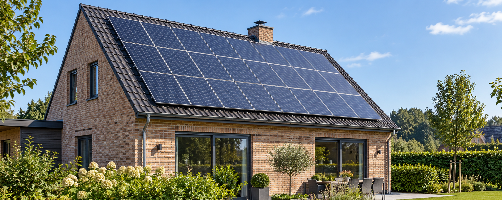

Vertel ons over je woning
Geef je daktype, oriëntatie en stroomverbruik aan. Zo sluit de berekening aan op jouw situatie.
Benieuwd naar de prijs én wat zonnepanelen je kunnen opleveren? Bereken een eerste indicatie op basis van jouw dak en stroomverbruik.
Gratis berekening. De definitieve prijs wordt bevestigd door een installateur.

Start met je daktype. De calculator begeleidt je stap voor stap.
Liever op een aparte pagina? Open de calculator in een nieuw tabblad
Geef je daktype, oriëntatie en stroomverbruik aan. Zo sluit de berekening aan op jouw situatie.
Bekijk een indicatieve investering, verwachte stroomproductie en geschatte jaarlijkse besparing.
Wil je verder met je plannen? In de calculator geef je aan of je vrijblijvende offertes wilt ontvangen.
Hoeveel panelen passen bij jouw woning? Je stroomverbruik, dakoriëntatie en beschikbare ruimte maken het verschil.
De calculator brengt die gegevens samen. Zo krijg je een eerste beeld van de investering en mogelijke opbrengst voordat je een offerte bespreekt.
Ontdek mijn richtprijsDe berekening is indicatief. De werkelijke opbrengst hangt onder meer af van schaduw, oriëntatie, je eigen verbruik en energieprijzen. Een installateur controleert je dak en bevestigt de definitieve prijs.
Dit helpt je op weg.
Ja. Je kunt gratis een indicatieve prijs en opbrengst voor zonnepanelen berekenen. De berekening is geen bestelling of definitieve offerte.
Ja. De calculator ondersteunt een hellend dak, een plat dak en een combinatie van beide.
Je jaarverbruik helpt om een passende installatie in te schatten. Je vindt dit op je jaarafrekening of via je digitale meter.
Nee. Het zijn schattingen op basis van je antwoorden en de aannames van de calculator. Je eigen verbruik, werkelijke opbrengst en energieprijzen beïnvloeden het resultaat.
In de calculator geef je je contactgegevens door en kies je of je offertes wilt ontvangen. Lees daar de privacy-informatie voordat je je aanvraag verstuurt.
Maak je plannen concreet met een eerste prijsindicatie.
Bereken mijn richtprijsPraktische uitleg over jouw project, van voorbereiding tot oplevering.
Bekijk de tien gidsen →